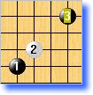
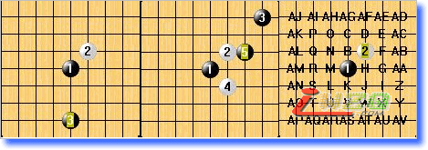

《博弈规则》5-设想中的博弈规则1.40
#1 《博弈规则》5-设想中的博弈规则1.40 作者：有志青年 发表时间：2007-11-22 16:58:17
总目录【主题贴】 《博弈规则》正式版1.1 ShowPost.asp?ThreadID=3005
建议：对该规则的评估、评价，应更多针对其核心博弈-选择权展开。而具体的规则模式（如开局落子数，棋盘禁手，如何使用博弈-选择权等）是次要的，可以调整为适应最初学的新手乃至最高级的棋手。
博弈-选择权：博弈权指由任一方自愿使用，自主选择3种默认类型中的一种的权力，同时对方将因此获得一次免费选择权。博弈权与对方获得的选择权合并称为博弈-选择权。
以范例模式展开说明：
1) 猜先，假先落前3手无限制，假后选择是否交换。
2) 接着，后手有2种选择，1，直接落第4子；2，使用博弈权。
3) 然后，先手也有2种选择，1，直接落第5子；2，使用博弈权。
4) 如此往复，第10手之后双方按照正常规则行棋。
附1：博弈规则默认3种类型：
1) 移子类型：A方移动棋盘上任一个棋子包括B方刚落的子到棋盘任意一个未落子位置。
2) Sakata类型：A方连续落两手，比如B方刚下第n手，A方连续落2子即n+1,n+2手。
3) 打点类型：A方可以要求B方刚落子打点，即要求B方包括刚落子下N打（N由A指定），然后由A方选择保留某个打点。
其中前2类是在A方移完子/连续落完2子B方再确认是否交换；第3类是B先确定是否交换再打点。关于博弈权详细介绍见第二章（二）3。
附2：这里的博弈-选择权，更多是为新手准备的，因此没有涉及贴时；策略竞技的博弈规则一般要求贴时，详细见第二章（二）1。
主要特点：博弈规则由其核心博弈-选择权及具体规则模式2部分构成，其本意是针对开局阶段双方都难以看清局势并进行策略对抗的特点设计的规则。博弈规则本质提供一种思路，一种元素——博弈-选择权，它本身与规则的开局、禁手、棋盘大小等皆不冲突。因此它具有很强的可调整性来适应各种各样的实际情况。下面以博弈规则的范例模式为例简单说明该规则的主要特点：
1， 自愿主动地达成技术平衡
博弈-选择权具有的一样基本功能即：可以将不平衡局面转化为平衡局，但却不能将平衡局面转化为不平衡。再加上对局双方可以自愿使用，反复磨合之下可以轻松达成技术平衡。详细见第二章（一）1。
2，行棋思路变化小
该规则表面上看起来复杂，但实际上并不难上手，这主要因为该规则与单纯的无禁手规则相比，行棋思路改变很小。详细见第二章（一）3。
附：当前流行的诸多SAKATA类无禁手规则，理论上也可以达成技术平衡目标，但往往难以摆脱2项困难即：1强迫一方走出弱手来实现平衡，策略上不平衡；2理论可以平衡但实际操作起来难题大。
博弈规则其博弈权类型虽然本质是SAKATA类，但却是本着自愿原则使用而非强迫，事实上博弈规则是鼓励走强手的；再者何时使用由棋手自己把握，棋手有更多自我把握的空间，降低了操作难度。
3，该规则富有策略竞技性(重)
所谓博弈规则，即提倡博弈竞技的规则。3种博弈权默认类型对局面改变的程度上并不深入，但范围却很广。（规则只能移1子，或者连落2子，程度不深；但广度上却可以改变现在以及将有的落子。）
因此，在遵从一定度的条件下，博弈权具有一项基本策略功能即：可以摆脱对方的熟悉局面，同时也可以将局面导向自己熟悉的局面。

比如A方下出这么3手棋，B方可以怀疑A对这个开局很有研究，那么B可以有诸多策略化解，如直接利用博弈权进行局面调整。

比如左图，可以通过移子将局面转化成自己比较熟悉的局面；(表面看起来像等同于换B开局，区别在于A将具有选择权，而A开局时B并没有选择权)
而中图， 通过连续落2子，将局面转化为自己熟悉的或者自己觉得平衡的局面。
右图则是利用打点，让A下N个打点（3手），然后自己选择觉得平衡的或者自己熟悉的3手。当然打点也不能太多，否则对方交换就自找麻烦了。
除此之外，B方也可以不急于使用博弈权，直接下4手，将来再使用博弈权。但是若拖太多手使局面定型，那么想变到自己熟悉的局面难度增大，
#2 Re:博弈规则1.40 之一【博弈规则概述】 作者：『五目』棋癫 发表时间：2007-11-23 1:21:03
该规则很有创意,支持昊天兄,加油!
变化量是棋种的生命力, 一个棋种的变化量及未知局面 当然是越多越好,RIF规则百珠满局的限定只能下15路小棋盘,为了平衡而不惜以牺牲变化量为代价,这种舍本逐末的做法实在不可取.而新平衡规则则不需要限定15路和百珠满局,增加中盘空间恢复19路将变成可能.
19路如能配上更好的平衡规则,那五子棋的发展前景将不可限量.这样规则下19路的五子棋的变化量及未知局面将比围棋还要多,算力还要难还要深, 既充分发掘了五子棋博大精深的一面 又保留有其 短平快的特点,迎合了现代社会生活节奏的需要.
规则确实需要改,SWAP2规则,两次交换3+4,+2规则,移子规则,博弈规则等等都很有特点,具体采用哪种新规则,还需不断测试和实践验证.
#3 Re:博弈规则1.40 之一【博弈规则概述】 作者：xr__ 发表时间：2007-11-23 9:01:45
笔者提出的 “博弈-选择权”非常具有科学性！目前提出的各种规则 如SWAP1 SWPA2 3+4 移子规则 3+4[+4] 1+2[+2……]等规则，都是具体的博弈规则！！
博弈规则本身只是个概念 向某个方向简化 就得出了以上规则。
#4 Re:《博弈规则》5-设想中的博弈规则1.40 作者：游戏人间 发表时间：2007-12-11 20:47:48
好长.没全看懂.只想问下蛋一点.时间上如何设置呢?如果强硬规定贴时必然对某一方是不公平的.如果不限制时间的使用.很怀疑是否前十手下完后双方所剩时间为多少?而硬性的规定时间如何也是对某一方不公平的.所以没太看明白.不过这个规则中和了很多规则的优点却没有它们的缺点.还是值得探讨的#5 Re:《博弈规则》5-设想中的博弈规则1.40 作者：无尽 发表时间：2007-12-14 19:33:53
YeYuwzq是戴晓涵 两个都是小天哈
两个都是小天哈